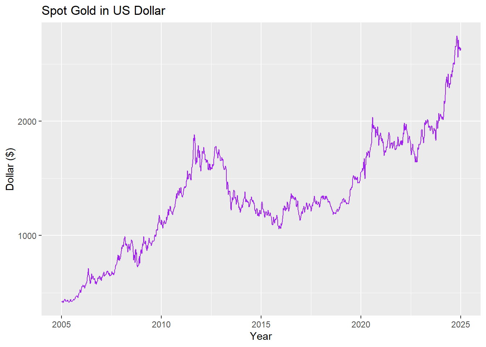
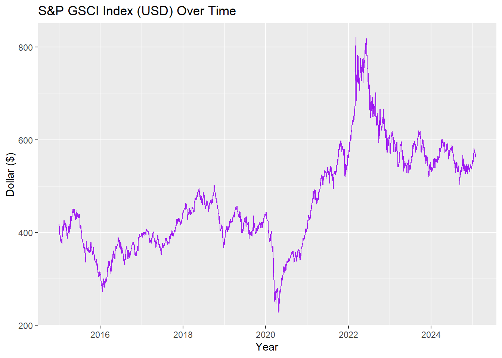
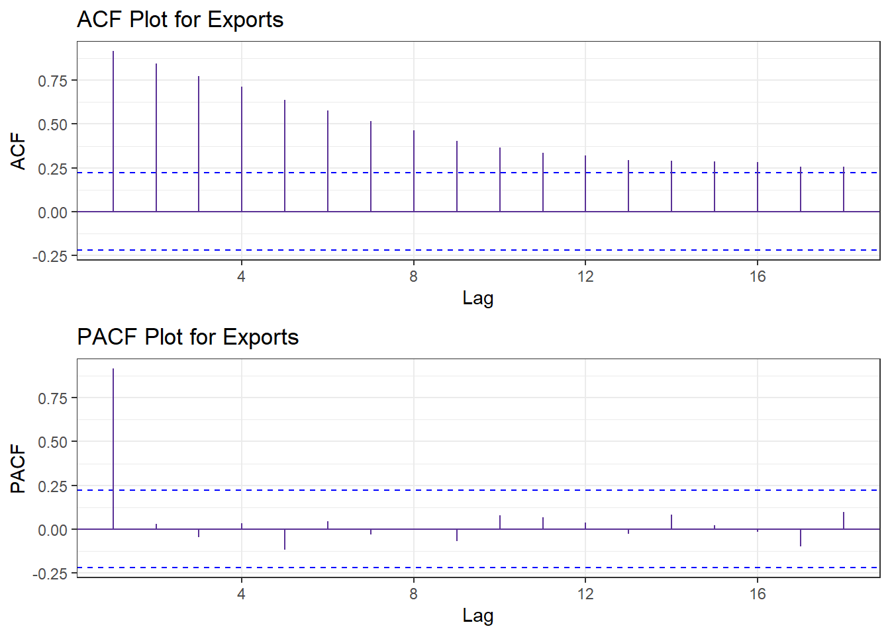
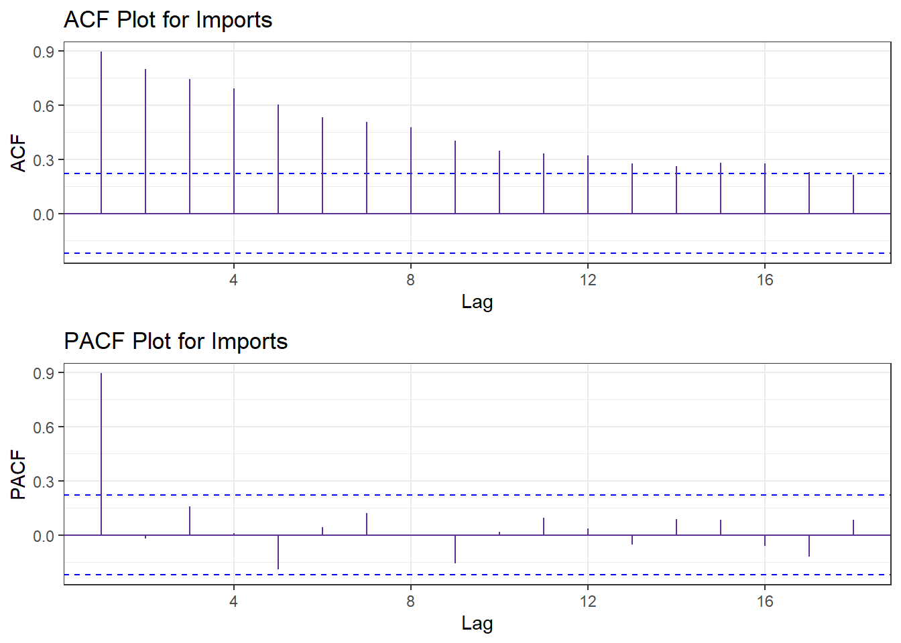
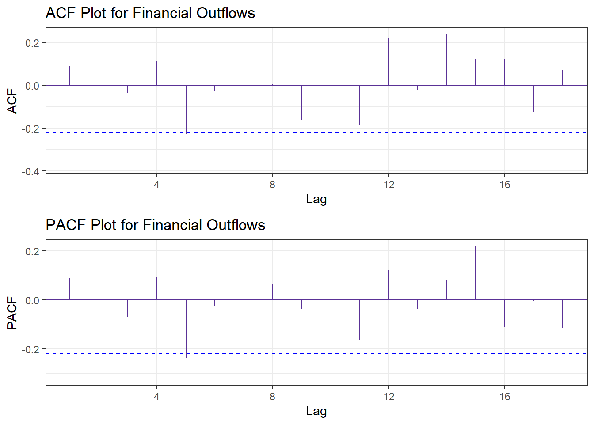
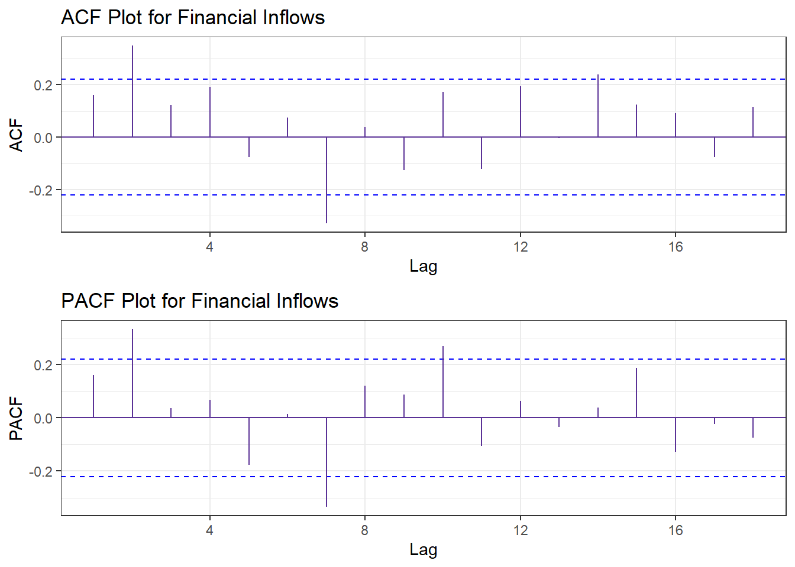
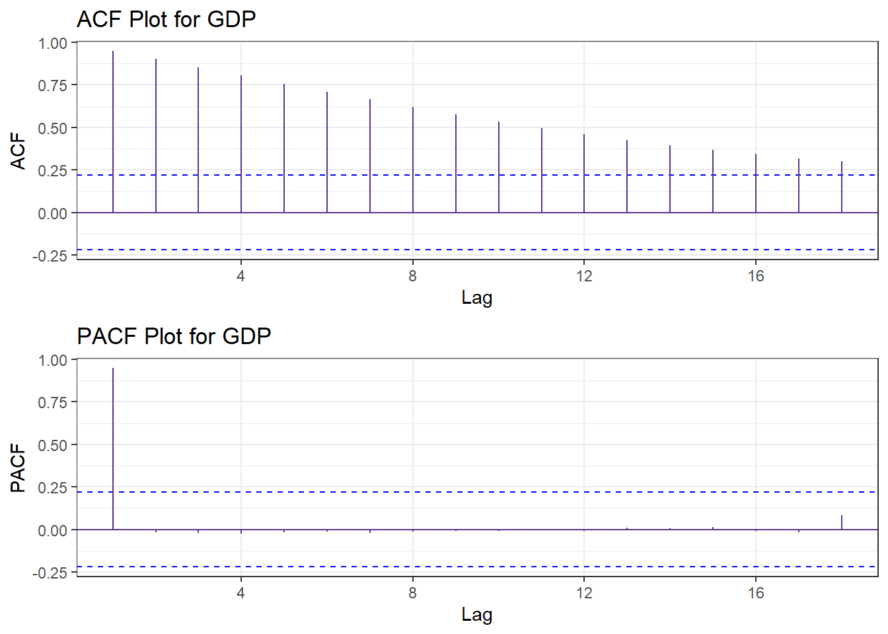
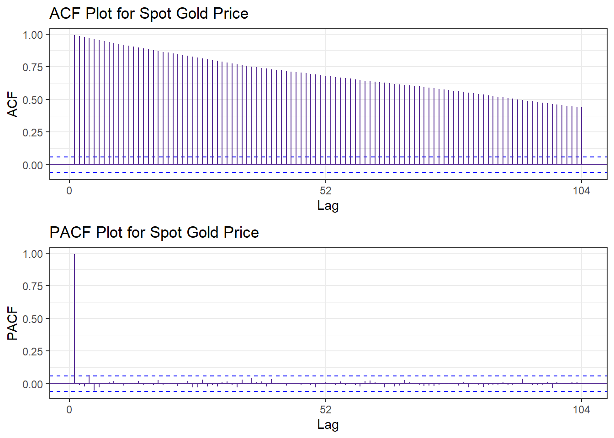
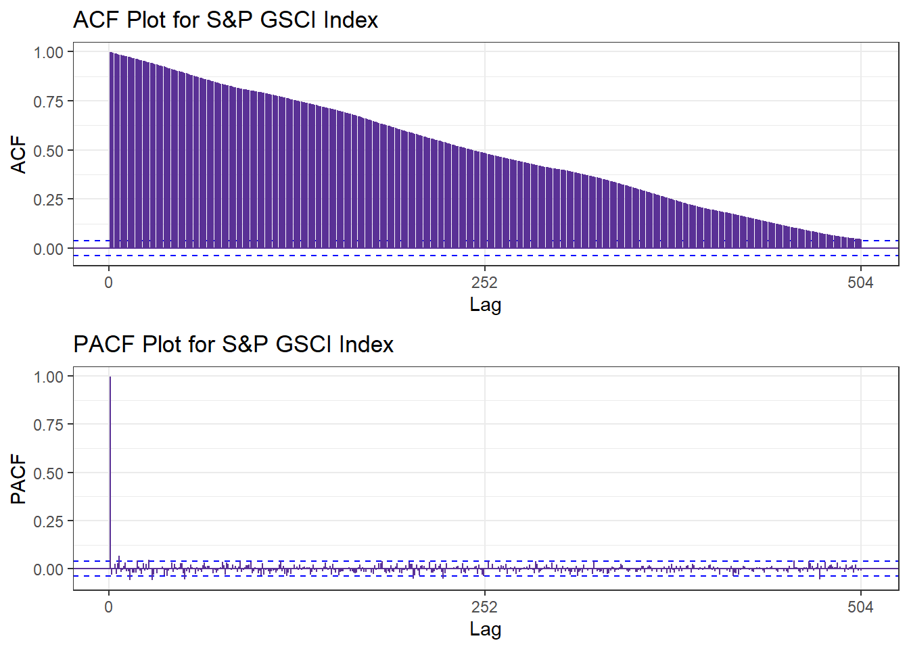

library(ggplot2)library(tidyverse)library(plotly)dxy <-read.csv("./data/US_Dollar_Index.csv",header =TRUE)dxy$Date <-as.Date(dxy$Date, format ="%m/%d/%Y")dxy <- dxy[order(dxy$Date),]gg <-ggplot(data = dxy, aes(x = Date, y = Price)) +geom_line(color='purple') +labs(x ="Year", title ="Trend of U.S. Dollar Index")plotly_gg <-ggplotly(gg)plotly_gg
The time series plot of the U.S. Dollar Index shows an upward trend and quarterly seasonality. However, it does not exhibit clearly periodic fluctuations across years. I preliminarily consider it to follow an multiplicative model.
Code
bea <-read.csv("./data/cleaned_bea.csv")bea$time <-as.Date(bea$time)gg <-ggplot(bea) +geom_line(aes(x = time, y = exports/1000, color ="Exports")) +geom_line(aes(x = time, y = imports/1000, color ="Imports")) +labs(x ="Year", y ="Billions of Dollars", color ="Legend", title ="Trends of Exports and Imports")plotly_gg <-ggplotly(gg)plotly_gg
The time series plot of exports and imports shows an upward trend with two sharp declines. It exhibits quarterly seasonality and potential 5-year periodic fluctuations. I preliminarily consider it to follow an multiplicative model.
Code
gg <-ggplot(bea) +geom_line(aes(x = time, y = net_out/1000, color ="Financial Outflow")) +geom_line(aes(x = time, y = net_in/1000, color ="Financial Inflow")) +labs(x ="Year", y ="Billions of Dollars", color ="Legend",title ="Trends of Financial Inflows and Outflows")plotly_gg <-ggplotly(gg)plotly_gg
The time series plot of financial inflows and outflows shows steady fluctuations with quarterly seasonality and a 3-year cycle. I preliminarily consider it to follow an multiplicative model.
Code
gdp <-read.csv("./data/cleaned_gdp.csv")gdp$time <-as.Date(gdp$time)gdp$total <- gdp$consumption + gdp$investment + gdp$net_export + gdp$governmentgg <-ggplot(data = gdp, aes(x = time, y = total)) +geom_line(color='purple') +labs(x ="Year", y ="Billions of Dollars", title ="GDP Over Time")plotly_gg <-ggplotly(gg)plotly_gg
The time series plot of GDP shows a steady increasing trend with a weakly quarterly seasonality, but no periodic fluctuations. I preliminarily consider it to follow an multiplicative model.
Code
xau <-read.csv("./data/cleaned_xau.csv")xau$Date <-as.Date(xau$Date)ggplot(data = xau, aes(x = Date, y = Price)) +geom_line(color='purple') +labs(x ="Year", y ="Dollar ($)", title ="Spot Gold in US Dollar")

The plot shows an upward trend in spot gold prices, with annual seasonality. I preliminarily consider it to follow a multiplicative model.
Code
library(readxl)gsci <-read.csv("./data/cleaned_gsci.csv")gsci$Date <-as.Date(gsci$Date)ggplot(data = gsci, aes(x = Date, y = Price)) +geom_line(color='purple') +labs(x ="Year", y ="Dollar ($)", title ="S&P GSCI Index (USD) Over Time")

The plot shows a stable trend from 2015 to 2020, an increase from 2020 to 2022, and a decrease from 2022 to 2025. There is an annual seasonality, but no obvious cycle. I preliminarily consider it to follow a multiplicative model.
From the log plot, we can see that the U.S. Dollar Index has a strong positive autocorrelation. Even at lag 9, it still shows a high autocorrelation, indicating that past values have a lasting impact on current values. This suggests a persistent trend and momentum in the time series data.
From the log plot, we can see that the Exports data has a strong positive autocorrelation in the first three lags, which then gradually weakens until it becomes very weak in lags 7-9. Moreover, since data points from different quarters are clustered together, there is no clear seasonal pattern in the serial correlation. This suggests that while past values influence current values in the short term, the effect diminishes over time.
From the log plot, we can see that the Imports data has a strong positive autocorrelation in the first three lags, which then gradually weakens until it becomes very weak in lags 6-9. Moreover, since data points from different quarters are clustered together, there is no clear seasonal pattern in the serial correlation. This suggests that while past values influence future values in the short term, the effect diminishes over time.
From the log plot, we can see that the Financial Outflows data does not exhibit strong autocorrelation. Since data points in all 9 lag plots are clustered together rather than forming a linear pattern along the main-diagonal or anti-diagonal, this suggests that past values do not strongly influence future values, and the data lacks a clear serial correlation structure.
From the log plot, we can see that the Financial Inflows data does not exhibit strong autocorrelation. Since data points in all 9 lag plots are clustered together rather than forming a linear pattern along the main-diagonal or anti-diagonal, this suggests that past values do not strongly influence future values, and the data lacks a clear serial correlation structure.
From the log plot, we can see that the GDP data has a strong positive autocorrelation in the first two lags, which then gradually weakens until it becomes very weak in lags 6-9. Moreover, since data points from different quarters are clustered together, there is no clear seasonal pattern in the serial correlation. This suggests that while past values influence future values in the short term, the effect diminishes over time.
From the log plot, we can see that the Spot Gold Price has a strong positive autocorrelation. Even at lag 16, it still shows a high autocorrelation, indicating that past values have a lasting impact on current values.
From the log plot, we can see that the S&P GSCI Index has a strong positive autocorrelation. Even at lag 16, it still shows a high autocorrelation, indicating that past values have a lasting impact on current values.
library(gridExtra)acf <-ggAcf(dxy_ts)+ggtitle("ACF Plot for U.S. Dollar Index") +theme_bw()+geom_segment(lineend ="butt", color ="#5a3196") +geom_hline(yintercept =0, color ="#5a3196") pacf <-ggPacf(dxy_ts)+ggtitle("PACF Plot for U.S. Dollar Index") +theme_bw()+geom_segment(lineend ="butt", color ="#5a3196") +geom_hline(yintercept =0, color ="#5a3196") grid.arrange(acf, pacf, nrow=2)
The ACF plot shows a very slow decay over time, meaning autocorrelation remains high for many lags and decays very slowly towards zero. The PACF plot shows a sharp drop at lag 1, and then the values will rapidly approach zero. Only the first lag is significant, and the rest are close to zero. This indicates that the U.S. Dollar Index time series is non-stationary, and it may be unit root non-stationary.
Code
acf <-ggAcf(exports_ts)+ggtitle("ACF Plot for Exports") +theme_bw()+geom_segment(lineend ="butt", color ="#5a3196") +geom_hline(yintercept =0, color ="#5a3196") pacf <-ggPacf(exports_ts)+ggtitle("PACF Plot for Exports") +theme_bw()+geom_segment(lineend ="butt", color ="#5a3196") +geom_hline(yintercept =0, color ="#5a3196") grid.arrange(acf, pacf, nrow=2)

Similar to the U.S. Dollar Index time series, the ACF plot for the exports data shows a very slow decay over time, while the PACF plot drops sharply at lag 1 and then rapidly approaches zero. However, the decay in the ACF plot is slightly faster than that of a typical unit root series. This suggests that the non-stationarity in the exports time series is more likely due to a trend rather than a unit root, meaning it is trend stationary.
Code
acf <-ggAcf(imports_ts)+ggtitle("ACF Plot for Imports") +theme_bw()+geom_segment(lineend ="butt", color ="#5a3196") +geom_hline(yintercept =0, color ="#5a3196") pacf <-ggPacf(imports_ts)+ggtitle("PACF Plot for Imports") +theme_bw()+geom_segment(lineend ="butt", color ="#5a3196") +geom_hline(yintercept =0, color ="#5a3196") grid.arrange(acf, pacf, nrow=2)

Similar to the U.S. Dollar Index time series, the ACF plot for the imports data shows a very slow decay over time, while the PACF plot drops sharply at lag 1 and then rapidly approaches zero. However, the decay in the ACF plot is slightly faster than that of a typical unit root series. This suggests that the non-stationarity in the imports time series is more likely due to a trend rather than a unit root, meaning it is trend stationary.
Code
acf <-ggAcf(outflow_ts)+ggtitle("ACF Plot for Financial Outflows") +theme_bw()+geom_segment(lineend ="butt", color ="#5a3196") +geom_hline(yintercept =0, color ="#5a3196") pacf <-ggPacf(outflow_ts)+ggtitle("PACF Plot for Financial Outflows") +theme_bw()+geom_segment(lineend ="butt", color ="#5a3196") +geom_hline(yintercept =0, color ="#5a3196") grid.arrange(acf, pacf, nrow=2)

For both ACF and PACF plots, most of the values lie roughly within the interval ±2/√n, indicating that the autocorrelations are not significantly different from zero for most lags. This suggests that there is no strong correlation at those lags and that the time series may be random or weakly dependent over those lags. In other words, since the points lie within this interval, it typically means that the autocorrelations are statistically insignificant.
Code
acf <-ggAcf(inflow_ts)+ggtitle("ACF Plot for Financial Inflows") +theme_bw()+geom_segment(lineend ="butt", color ="#5a3196") +geom_hline(yintercept =0, color ="#5a3196") pacf <-ggPacf(inflow_ts)+ggtitle("PACF Plot for Financial Inflows") +theme_bw()+geom_segment(lineend ="butt", color ="#5a3196") +geom_hline(yintercept =0, color ="#5a3196") grid.arrange(acf, pacf, nrow=2)

For both ACF and PACF plots, most of the values lie roughly within the interval ±2/√n, indicating that the autocorrelations are not significantly different from zero for most lags. This suggests that there is no strong correlation at those lags and that the time series may be random or weakly dependent over those lags. In other words, since the points lie within this interval, it typically means that the autocorrelations are statistically insignificant.
Code
acf <-ggAcf(gdp_ts)+ggtitle("ACF Plot for GDP") +theme_bw()+geom_segment(lineend ="butt", color ="#5a3196") +geom_hline(yintercept =0, color ="#5a3196") pacf <-ggPacf(gdp_ts)+ggtitle("PACF Plot for GDP") +theme_bw()+geom_segment(lineend ="butt", color ="#5a3196") +geom_hline(yintercept =0, color ="#5a3196") grid.arrange(acf, pacf, nrow=2)

The ACF plot shows a very slow decay over time, meaning autocorrelation remains high for many lags and decays very slowly towards zero. The PACF plot shows a sharp drop at lag 1, and then the values will rapidly approach zero. Only the first lag is significant, and the rest are close to zero. This indicates that the GDP time series is non-stationary, and it may be unit root non-stationary.
Code
acf <-ggAcf(xau_ts)+ggtitle("ACF Plot for Spot Gold Price") +theme_bw()+geom_segment(lineend ="butt", color ="#5a3196") +geom_hline(yintercept =0, color ="#5a3196") pacf <-ggPacf(xau_ts)+ggtitle("PACF Plot for Spot Gold Price") +theme_bw()+geom_segment(lineend ="butt", color ="#5a3196") +geom_hline(yintercept =0, color ="#5a3196") grid.arrange(acf, pacf, nrow=2)

The ACF plot shows a very slow decay over time, meaning autocorrelation remains high for many lags and decays very slowly towards zero. The PACF plot shows a sharp drop at lag 1, and then the values will rapidly approach zero. Only the first lag is significant, and the rest are close to zero. This indicates that the Spot Gold Price time series is non-stationary, and it may be unit root non-stationary.
Code
acf <-ggAcf(gsci_ts)+ggtitle("ACF Plot for S&P GSCI Index") +theme_bw()+geom_segment(lineend ="butt", color ="#5a3196") +geom_hline(yintercept =0, color ="#5a3196") pacf <-ggPacf(gsci_ts)+ggtitle("PACF Plot for S&P GSCI Index") +theme_bw()+geom_segment(lineend ="butt", color ="#5a3196") +geom_hline(yintercept =0, color ="#5a3196") grid.arrange(acf, pacf, nrow=2)

The ACF plot shows a very slow decay over time, meaning autocorrelation remains high for many lags and decays very slowly towards zero. The PACF plot shows a sharp drop at lag 1, and then the values will rapidly approach zero. Only the first lag is significant, and the rest are close to zero. This indicates that the S&P GSCI Index is non-stationary, and it may be unit root non-stationary.
Augmented Dickey-Fuller Test
data: dxy_ts
Dickey-Fuller = -2.6339, Lag order = 10, p-value = 0.31
alternative hypothesis: stationary
The p-value in the ADF test for the U.S. Dollar Index is 0.31. It indicates that we fail to reject the null hypothesis at the 10% significance level. This means there is insufficient evidence to conclude that the U.S. Dollar Index is stationary. Therefore, it is likely that the U.S. Dollar Index contains a unit root and is non-stationary.
Code
tseries::adf.test(exports_ts)
Augmented Dickey-Fuller Test
data: exports_ts
Dickey-Fuller = -3.126, Lag order = 4, p-value = 0.1152
alternative hypothesis: stationary
The p-value in the ADF test for the exports data is 0.12. This indicates that we fail to reject the null hypothesis at the 10% significance level, but there is still some degree of significance. Considering the conclusions from Part 4 with the ACF and PACF plots, it is possible that the ADF test is detecting non-stationarity due to a unit root. However, the exports time series may actually be trend stationary, meaning it has a trend rather than a unit root, which the ADF test cannot detect. As a result, the test fails to reject the null hypothesis, but the marginal significance suggests that the series might still exhibit some form of non-stationarity that is related to a trend rather than a unit root.
Code
tseries::adf.test(imports_ts)
Augmented Dickey-Fuller Test
data: imports_ts
Dickey-Fuller = -3.4808, Lag order = 4, p-value = 0.04924
alternative hypothesis: stationary
The p-value in the ADF test for the imports data is 0.049, which indicates that we can reject the null hypothesis at the 5% significance level. However, the ADF test specifically detects non-stationarity due to a unit root and does not account for trend stationarity. Based on the conclusions from Part 4 with the ACF and PACF plots, the imports time series may actually be trend stationary, meaning its non-stationarity is driven by a trend rather than a unit root. Since the ADF test does not differentiate between these cases, rejecting the null hypothesis does not necessarily confirm stationarity in the strict sense. Instead, the series might still exhibit some form of non-stationarity related to the trend component.
Code
tseries::adf.test(outflow_ts)
Augmented Dickey-Fuller Test
data: outflow_ts
Dickey-Fuller = -4.1195, Lag order = 4, p-value = 0.01
alternative hypothesis: stationary
The p-value in the ADF test for the financial outflows data is 0.01, which indicates that we can reject the null hypothesis at the 5% significance level. This means there is sufficient evidence to conclude that the time series is stationary.
Code
tseries::adf.test(inflow_ts)
Augmented Dickey-Fuller Test
data: inflow_ts
Dickey-Fuller = -3.1841, Lag order = 4, p-value = 0.09662
alternative hypothesis: stationary
The p-value in the ADF test for the financial inflows data is 0.09, which indicates that we can reject the null hypothesis at the 10% significance level. This means there is sufficient evidence to conclude that the time series is stationary.
Code
tseries::adf.test(gdp_ts)
Augmented Dickey-Fuller Test
data: gdp_ts
Dickey-Fuller = -0.0084786, Lag order = 4, p-value = 0.99
alternative hypothesis: stationary
The p-value in the ADF test for the GDP is 0.99. This means there is insufficient evidence to conclude that the GDP is stationary at the 10% significant level. Therefore, it is likely that the time series contains a unit root and is non-stationary.
Code
tseries::adf.test(xau_ts)
Augmented Dickey-Fuller Test
data: xau_ts
Dickey-Fuller = -1.0526, Lag order = 10, p-value = 0.9302
alternative hypothesis: stationary
The p-value in the ADF test for the Spot Gold Price is 0.93. This means there is insufficient evidence to conclude that it is stationary at the 10% significant level. Therefore, it is likely that the time series contains a unit root and is non-stationary.
Code
tseries::adf.test(gsci_ts)
Augmented Dickey-Fuller Test
data: gsci_ts
Dickey-Fuller = -2.2316, Lag order = 13, p-value = 0.4803
alternative hypothesis: stationary
The p-value in the ADF test for the S&P GSCI Index is 0.48. This means there is insufficient evidence to conclude that the index is stationary at the 10% significant level. Therefore, it is likely that the time series contains a unit root and is non-stationary.